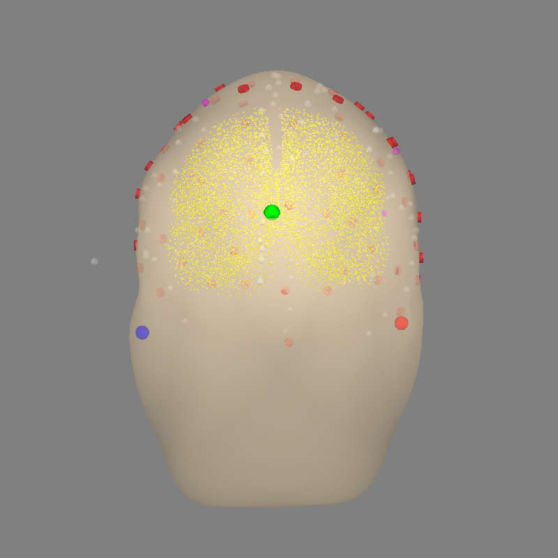
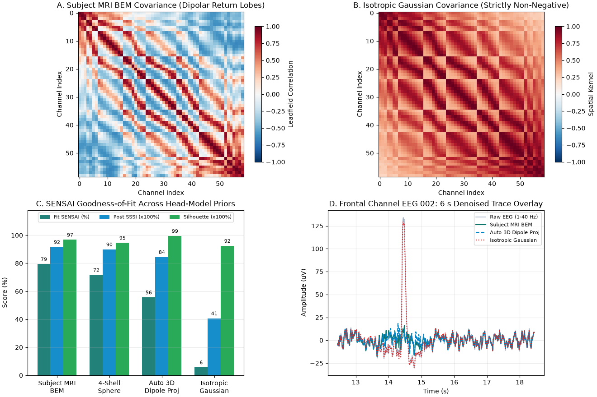
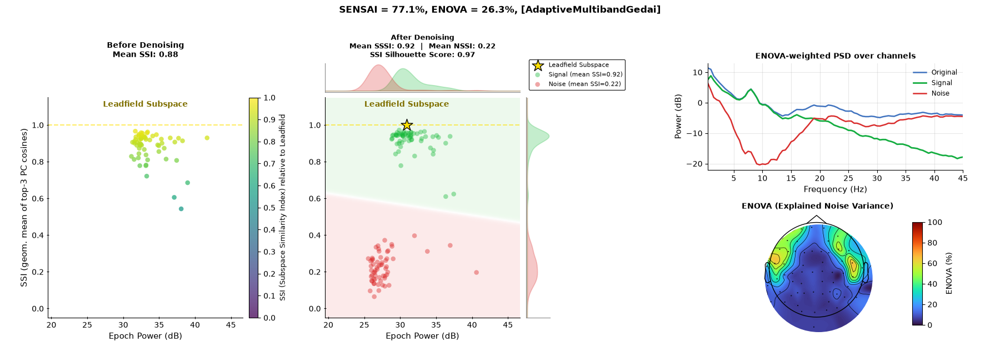
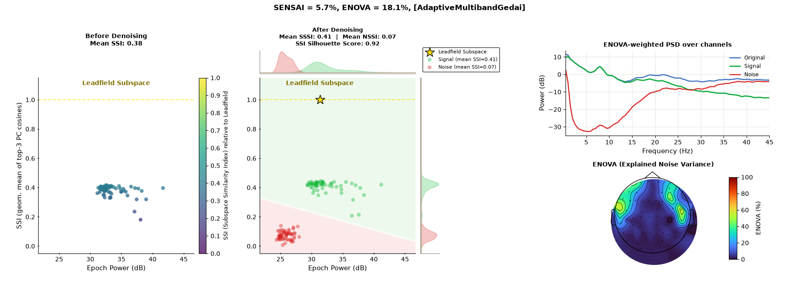

Note
Go to the end to download the full example code.
Custom Head Models & SENSAI Goodness-of-Fit🔗
GEDAI’s default reference_cov="leadfield" already bundles a generic
343-channel fsaverage OpenMEEG BEM model (with automatic 3D dipole-kernel
projection fallback when custom channel names lack standard 10-05 labels).
Rebuilding another fsaverage BEM forward for 10-20 channels is therefore
redundant.
You genuinely need a custom mne.Forward solution (or custom
mne.Covariance) when:
Your subject has individual MRI anatomy or non-standard scalp geometry.
Your montage uses non-10-20 or high-density digitized positions.
You want to compare competing head-model priors quantitatively using SENSAI goodness-of-fit (
fit_metrics_["sensai_score"], Subspace Similarity IndexSSSIvs.NSSI, andsignal_silhouette) alongsideplot_sensai().
This tutorial uses the MNE sample dataset (individual subject MRI BEM +
60 digitized non-10-20 EEG channels EEG 001..``EEG 060``, including real
bad channel EEG 053) to benchmark four spatial priors:
Subject MRI BEM (
compute_covariance_from_forward())4-Shell Sphere Forward (
mne.make_sphere_model())Auto 3D Dipole Projection (
reference_cov="leadfield"fallback)Isotropic Gaussian (
compute_covariance_from_channel_positions())
import matplotlib.pyplot as plt
import mne
import numpy as np
from mne.datasets import sample
from gedai import AdaptiveMultibandGedai
from gedai.covariance import (
compute_covariance_from_channel_positions,
compute_covariance_from_forward,
)
1. Load Subject MRI Anatomy & 60-Channel Non-10-20 EEG🔗
We load 60 seconds of the MNE sample EEG recording, resample to 200 Hz,
and high-pass filter at 0.5 Hz. Notice that the channel names
(EEG 001..``EEG 060``) are non-10-20 digitized locations and include
bad channel EEG 053, which GEDAI will detect/exclude during fitting and
restore via spherical spline interpolation on transform.
data_path = sample.data_path()
meg_dir = data_path / "MEG" / "sample"
bem_dir = data_path / "subjects" / "sample" / "bem"
raw = mne.io.read_raw_fif(
meg_dir / "sample_audvis_raw.fif", preload=False, verbose=False
)
raw.pick("eeg").crop(0.0, 60.0).load_data()
raw.resample(200.0, verbose=False)
raw.filter(l_freq=0.5, h_freq=None, verbose=False)
Reading 0 ... 36037 = 0.000 ... 60.000 secs...
2. Construct Competing Spatial Priors🔗
We construct covariances from:
The subject’s individual 3-layer MRI BEM forward solution (with average referencing applied via
compute_covariance_from_forward()).A 4-shell spherical forward solution built from the digitized head surface.
An isotropic Euclidean Gaussian kernel from 3D channel positions (no physics).
Note that passing reference_cov="leadfield" directly to GEDAI on these
non-10-20 EEG 001..``EEG 060`` channels automatically triggers the built-in
3D dipole-kernel projection from their digitized 3D coordinates.
fwd_bem = mne.read_forward_solution(
meg_dir / "sample_audvis-eeg-oct-6-fwd.fif", verbose=False
)
cov_bem = compute_covariance_from_forward(fwd_bem)
sphere = mne.make_sphere_model(
r0="auto", head_radius="auto", info=raw.info, verbose=False
)
src_subj = mne.read_source_spaces(bem_dir / "sample-oct-6-src.fif", verbose=False)
trans_subj = meg_dir / "sample_audvis_raw-trans.fif"
fwd_sphere = mne.make_forward_solution(
raw.info,
trans=trans_subj,
src=src_subj,
bem=sphere,
meg=False,
eeg=True,
mindist=5.0,
n_jobs=1,
verbose=False,
)
raw_good_info = raw.copy().drop_channels(raw.info["bads"]).info
cov_gauss_all = compute_covariance_from_channel_positions(raw_good_info)
print(
f"Subject MRI BEM forward: {fwd_bem['sol']['data'].shape} | "
f"4-shell sphere forward: {fwd_sphere['sol']['data'].shape}"
)
# Optional 3D coregistration check when a PyVista backend is active
try:
mne.viz.plot_alignment(
raw.info,
trans=trans_subj,
subject="sample",
subjects_dir=data_path / "subjects",
src=src_subj,
bem=bem_dir / "sample-5120-5120-5120-bem-sol.fif",
eeg=["projected"],
dig=True,
)
except Exception as exc:
print(f"Skipping 3D alignment view in headless environment ({exc}).")

Subject MRI BEM forward: (60, 22494) | 4-shell sphere forward: (60, 18606)
Loading BEM surfaces from /home/runner/mne_data/MNE-sample-data/subjects/sample/bem/sample-5120-5120-5120-bem-sol.fif...
3 BEM surfaces found
Reading a surface...
[done]
Reading a surface...
[done]
Reading a surface...
[done]
3 BEM surfaces read
Using pyvistaqt 3d backend.
For automatic theme detection, "darkdetect" has to be installed! You can install it with `pip install darkdetect`
For automatic theme detection, "darkdetect" has to be installed! You can install it with `pip install darkdetect`
Channel types:: eeg: 59
Projecting sensors to the head surface
3. Fit GEDAI Under Each Prior & Score SENSAI Goodness-of-Fit🔗
Because candidate priors do not require changing the cleaning algorithm, we run
identical AdaptiveMultibandGedai settings
(strength="auto") across all four
priors and inspect how well the cleaned vs. rejected data match each prior via
SENSAI goodness-of-fit:
fit_metrics_["sensai_score"]: optimization objective margin across bands.SSSI(ssi_after_mean): similarity of retained brain activity to the model’s cortical subspace (higher -> better preservation).NSSI(ssi_noise_mean): similarity of removed artifacts to the model subspace (lower -> cleaner artifact rejection).SSI Silhouette(signal_silhouette): separation between signal and noise clusters in SENSAI manifold space.
common_fit = dict(
strength="auto",
wavelet_low_cutoff=0.5,
on_bad_channel="exclude",
bad_channel_threshold="auto",
n_jobs=1,
verbose=False,
)
priors = [
("Subject MRI BEM", cov_bem),
("4-Shell Sphere", fwd_sphere),
("Auto 3D Dipole Proj", "leadfield"),
("Isotropic Gaussian", compute_covariance_from_channel_positions(raw.info)),
]
models: dict[str, AdaptiveMultibandGedai] = {}
cleaned: dict[str, mne.io.BaseRaw] = {}
gof_rows: list[dict] = []
for label, ref_cov in priors:
model = AdaptiveMultibandGedai(cycles_per_wavelet=12)
model.fit_raw(raw, reference_cov=ref_cov, **common_fit)
clean_raw = model.transform_raw(raw, interpolate_bads=True, n_jobs=1, verbose=False)
fig_tmp, sensai_met = model.plot_sensai(
raw_before=raw, raw_after=clean_raw, show=False
)
plt.close(fig_tmp)
models[label] = model
cleaned[label] = clean_raw
gof_rows.append(
{
"label": label,
"fit_sensai": float(model.fit_metrics_["sensai_score"]),
"mean_enova": float(model.metrics_["mean_enova"] * 100.0),
"sssi_pre": float(sensai_met["ssi_before_mean"]),
"sssi": float(sensai_met["ssi_after_mean"]),
"nssi": float(sensai_met["ssi_noise_mean"]),
"sil": float(sensai_met["signal_silhouette"]),
}
)
print(
f"\n{'Head Model Prior':22s} | {'Fit SENSAI':>10s} | {'ENOVA':>7s} | "
f"{'SSSI pre->post':>15s} | {'NSSI':>6s} | {'Sil':>6s}"
)
print("-" * 80)
for row in gof_rows:
print(
f"{row['label']:22s} | {row['fit_sensai']:9.2f}% | "
f"{row['mean_enova']:6.1f}% | "
f"{row['sssi_pre']:.3f} -> {row['sssi']:.3f} | "
f"{row['nssi']:.3f} | {row['sil']:.3f}"
)
[_utils._resolve_fit_picks] WARNING: Excluding bad channel(s) ['EEG 053'] from GEDAI fit (on_bad_channel='exclude').
[_utils._check_reference_channel] WARNING: Input data does not contain a flat reference channel. GEDAI will apply average referencing. Consider adding the reference channel(s) using :func:`mne.add_reference_channels` before using GEDAI.
[_utils._check_reference_channel] WARNING: Input data does not contain a flat reference channel. GEDAI will apply average referencing. Consider adding the reference channel(s) using :func:`mne.add_reference_channels` before using GEDAI.
[_utils._check_reference_channel] WARNING: Input data does not contain a flat reference channel. GEDAI will apply average referencing. Consider adding the reference channel(s) using :func:`mne.add_reference_channels` before using GEDAI.
[_utils._check_reference_channel] WARNING: Input data does not contain a flat reference channel. GEDAI will apply average referencing. Consider adding the reference channel(s) using :func:`mne.add_reference_channels` before using GEDAI.
[_utils._apply_eeg_average_reference_if_needed] INFO: Setting average reference.
EEG channel type selected for re-referencing
Applying average reference.
Applying a custom ('EEG',) reference.
[_utils._resolve_fit_picks] WARNING: Excluding bad channel(s) ['EEG 053'] from GEDAI fit (on_bad_channel='exclude').
[_utils._check_reference_channel] WARNING: Input data does not contain a flat reference channel. GEDAI will apply average referencing. Consider adding the reference channel(s) using :func:`mne.add_reference_channels` before using GEDAI.
[_utils._check_reference_channel] WARNING: Input data does not contain a flat reference channel. GEDAI will apply average referencing. Consider adding the reference channel(s) using :func:`mne.add_reference_channels` before using GEDAI.
[_utils._check_reference_channel] WARNING: Input data does not contain a flat reference channel. GEDAI will apply average referencing. Consider adding the reference channel(s) using :func:`mne.add_reference_channels` before using GEDAI.
[_utils._check_reference_channel] WARNING: Input data does not contain a flat reference channel. GEDAI will apply average referencing. Consider adding the reference channel(s) using :func:`mne.add_reference_channels` before using GEDAI.
[_utils._apply_eeg_average_reference_if_needed] INFO: Setting average reference.
EEG channel type selected for re-referencing
Applying average reference.
Applying a custom ('EEG',) reference.
[_utils._resolve_fit_picks] WARNING: Excluding bad channel(s) ['EEG 053'] from GEDAI fit (on_bad_channel='exclude').
[_utils._check_reference_channel] WARNING: Input data does not contain a flat reference channel. GEDAI will apply average referencing. Consider adding the reference channel(s) using :func:`mne.add_reference_channels` before using GEDAI.
[_utils._check_reference_channel] WARNING: Input data does not contain a flat reference channel. GEDAI will apply average referencing. Consider adding the reference channel(s) using :func:`mne.add_reference_channels` before using GEDAI.
[_utils._check_reference_channel] WARNING: Input data does not contain a flat reference channel. GEDAI will apply average referencing. Consider adding the reference channel(s) using :func:`mne.add_reference_channels` before using GEDAI.
[_utils._check_reference_channel] WARNING: Input data does not contain a flat reference channel. GEDAI will apply average referencing. Consider adding the reference channel(s) using :func:`mne.add_reference_channels` before using GEDAI.
[_utils._apply_eeg_average_reference_if_needed] INFO: Setting average reference.
EEG channel type selected for re-referencing
Applying average reference.
Applying a custom ('EEG',) reference.
[_utils._resolve_fit_picks] WARNING: Excluding bad channel(s) ['EEG 053'] from GEDAI fit (on_bad_channel='exclude').
[_utils._check_reference_channel] WARNING: Input data does not contain a flat reference channel. GEDAI will apply average referencing. Consider adding the reference channel(s) using :func:`mne.add_reference_channels` before using GEDAI.
[_utils._check_reference_channel] WARNING: Input data does not contain a flat reference channel. GEDAI will apply average referencing. Consider adding the reference channel(s) using :func:`mne.add_reference_channels` before using GEDAI.
[_utils._check_reference_channel] WARNING: Input data does not contain a flat reference channel. GEDAI will apply average referencing. Consider adding the reference channel(s) using :func:`mne.add_reference_channels` before using GEDAI.
[_utils._check_reference_channel] WARNING: Input data does not contain a flat reference channel. GEDAI will apply average referencing. Consider adding the reference channel(s) using :func:`mne.add_reference_channels` before using GEDAI.
[_utils._apply_eeg_average_reference_if_needed] INFO: Setting average reference.
EEG channel type selected for re-referencing
Applying average reference.
Applying a custom ('EEG',) reference.
Head Model Prior | Fit SENSAI | ENOVA | SSSI pre->post | NSSI | Sil
--------------------------------------------------------------------------------
Subject MRI BEM | 79.38% | 26.3% | 0.880 -> 0.916 | 0.224 | 0.968
4-Shell Sphere | 71.62% | 14.6% | 0.867 -> 0.899 | 0.293 | 0.946
Auto 3D Dipole Proj | 55.62% | 30.1% | 0.786 -> 0.844 | 0.180 | 0.995
Isotropic Gaussian | 5.69% | 17.2% | 0.378 -> 0.407 | 0.074 | 0.924
4. Covariance Structure, SENSAI Goodness-of-Fit & Trace Dashboard🔗
Unlike an isotropic Gaussian kernel (strictly positive decay with distance),
real EEG leadfield covariances (BEM / sphere / 3D dipole projection) encode
dipolar return polarity (negative off-diagonal lobes across opposite
scalp hemispheres). This physical geometry yields dramatically higher
SENSAI goodness-of-fit (~56-79% vs. ~6% for isotropic Gaussian).
def _corr_matrix(mat: np.ndarray) -> np.ndarray:
diag = np.sqrt(np.maximum(np.diag(mat), 1e-30))
return mat / np.outer(diag, diag)
fitted_chs = list(models["Subject MRI BEM"].ch_names)
bem_idx = [cov_bem.ch_names.index(c) for c in fitted_chs]
bem_sub = cov_bem.data[np.ix_(bem_idx, bem_idx)]
gauss_idx = [cov_gauss_all.ch_names.index(c) for c in fitted_chs]
gauss_sub = cov_gauss_all.data[np.ix_(gauss_idx, gauss_idx)]
raw_avg = (
raw.copy()
.pick(fitted_chs)
.reorder_channels(fitted_chs)
.set_eeg_reference("average", projection=False, verbose=False)
)
raw_bp = raw_avg.copy().filter(1.0, 40.0, verbose=False).get_data()
# Select the most anterior good channel to showcase blink/frontal artifact removal
front_idx = int(
np.argmax([raw_avg.info["chs"][i]["loc"][1] for i in range(len(fitted_chs))])
)
front_ch = fitted_chs[front_idx]
sfreq = float(raw_avg.info["sfreq"])
seg_len = int(round(6.0 * sfreq))
peak_samp = int(np.argmax(np.abs(raw_bp[front_idx])))
st = max(0, min(peak_samp - seg_len // 3, raw_bp.shape[1] - seg_len))
sl = slice(st, st + seg_len)
t_seg = np.arange(st, st + seg_len) / sfreq
fig_dash, axes = plt.subplots(2, 2, figsize=(13.2, 8.8), constrained_layout=True)
im0 = axes[0, 0].imshow(_corr_matrix(bem_sub), cmap="RdBu_r", vmin=-1.0, vmax=1.0)
axes[0, 0].set_title("A. Subject MRI BEM Covariance (Dipolar Return Lobes)")
axes[0, 0].set_xlabel("Channel Index")
axes[0, 0].set_ylabel("Channel Index")
fig_dash.colorbar(im0, ax=axes[0, 0], shrink=0.82, label="Leadfield Correlation")
im1 = axes[0, 1].imshow(_corr_matrix(gauss_sub), cmap="RdBu_r", vmin=-1.0, vmax=1.0)
axes[0, 1].set_title("B. Isotropic Gaussian Covariance (Strictly Non-Negative)")
axes[0, 1].set_xlabel("Channel Index")
axes[0, 1].set_ylabel("Channel Index")
fig_dash.colorbar(im1, ax=axes[0, 1], shrink=0.82, label="Spatial Kernel")
ax_bar = axes[1, 0]
x_pos = np.arange(len(gof_rows))
bw = 0.25
fit_vals = [r["fit_sensai"] for r in gof_rows]
sssi_vals = [r["sssi"] * 100.0 for r in gof_rows]
sil_vals = [r["sil"] * 100.0 for r in gof_rows]
short_lbls = [
"Subject MRI\nBEM",
"4-Shell\nSphere",
"Auto 3D\nDipole Proj",
"Isotropic\nGaussian",
]
b1 = ax_bar.bar(
x_pos - bw, fit_vals, bw, color="#0f766e", alpha=0.92, label="Fit SENSAI (%)"
)
b2 = ax_bar.bar(
x_pos, sssi_vals, bw, color="#0284c7", alpha=0.92, label="Post SSSI (x100%)"
)
b3 = ax_bar.bar(
x_pos + bw, sil_vals, bw, color="#16a34a", alpha=0.92, label="Silhouette (x100%)"
)
for rect in list(b1) + list(b2) + list(b3):
val = rect.get_height()
ax_bar.text(
rect.get_x() + rect.get_width() / 2,
val + 1.4,
f"{val:.0f}",
ha="center",
va="bottom",
fontsize=7.6,
)
ax_bar.set_xticks(x_pos, short_lbls)
ax_bar.set_ylim(0.0, 118.0)
ax_bar.set_ylabel("Score (%)")
ax_bar.set_title("C. SENSAI Goodness-of-Fit Across Head-Model Priors")
ax_bar.grid(axis="y", alpha=0.25)
ax_bar.legend(loc="upper center", ncol=3, frameon=True, fontsize=8.0)
ax_tr = axes[1, 1]
ax_tr.plot(
t_seg,
raw_bp[front_idx, sl] * 1e6,
color="#94a3b8",
linewidth=1.1,
alpha=0.85,
label="Raw EEG (1-40 Hz)",
)
for lbl, col, ls in [
("Subject MRI BEM", "#0f766e", "-"),
("Auto 3D Dipole Proj", "#0284c7", "--"),
("Isotropic Gaussian", "#dc2626", ":"),
]:
c_bp = (
cleaned[lbl]
.copy()
.pick(fitted_chs)
.reorder_channels(fitted_chs)
.filter(1.0, 40.0, verbose=False)
.get_data()
)
ax_tr.plot(
t_seg,
c_bp[front_idx, sl] * 1e6,
color=col,
linestyle=ls,
linewidth=1.5,
label=lbl,
)
ax_tr.set_title(f"D. Frontal Channel {front_ch}: 6 s Denoised Trace Overlay")
ax_tr.set_xlabel("Time (s)")
ax_tr.set_ylabel("Amplitude (uV)")
ax_tr.grid(alpha=0.25)
ax_tr.legend(loc="upper right", frameon=True, fontsize=8.0)
plt.show()

5. Inspect SENSAI Manifolds: Physics-Matched Prior vs. Mismatched Prior🔗
Plotting the full 3-column SENSAI dashboard via model.plot_sensai shows
why goodness-of-fit tracks anatomical realism—across the SSI manifold,
ENOVA-weighted Welch PSD, and per-channel ENOVA topoplot. With the Subject
MRI BEM prior, cleaned epochs (green) concentrate near SSI ~ 0.92 close
to the theoretical cortical subspace while removed artifacts (red) drop to
NSSI ~ 0.22.

[_utils._check_reference_channel] WARNING: Input data does not contain a flat reference channel. GEDAI will apply average referencing. Consider adding the reference channel(s) using :func:`mne.add_reference_channels` before using GEDAI.
[_utils._apply_eeg_average_reference_if_needed] INFO: Setting average reference.
EEG channel type selected for re-referencing
Applying average reference.
Applying a custom ('EEG',) reference.
By contrast, under the Isotropic Gaussian prior, the reference covariance
lacks dipolar polarity, so even clean EEG epochs score poorly against the
mismatched subspace (SSSI ~ 0.39; Fit SENSAI ~ 6%). Running
plot_sensai quickly exposes a mis-specified custom covariance before
committing to downstream analyses.

[_utils._check_reference_channel] WARNING: Input data does not contain a flat reference channel. GEDAI will apply average referencing. Consider adding the reference channel(s) using :func:`mne.add_reference_channels` before using GEDAI.
[_utils._apply_eeg_average_reference_if_needed] INFO: Setting average reference.
EEG channel type selected for re-referencing
Applying average reference.
Applying a custom ('EEG',) reference.
Total running time of the script: (0 minutes 57.722 seconds)
Estimated memory usage: 1065 MB